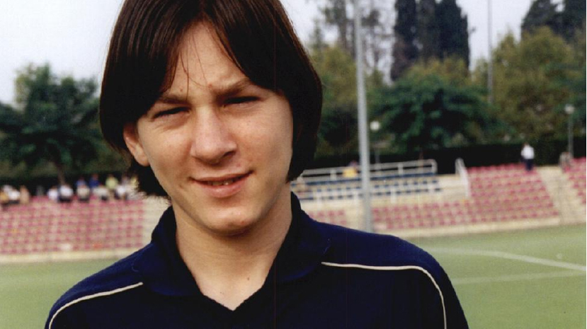
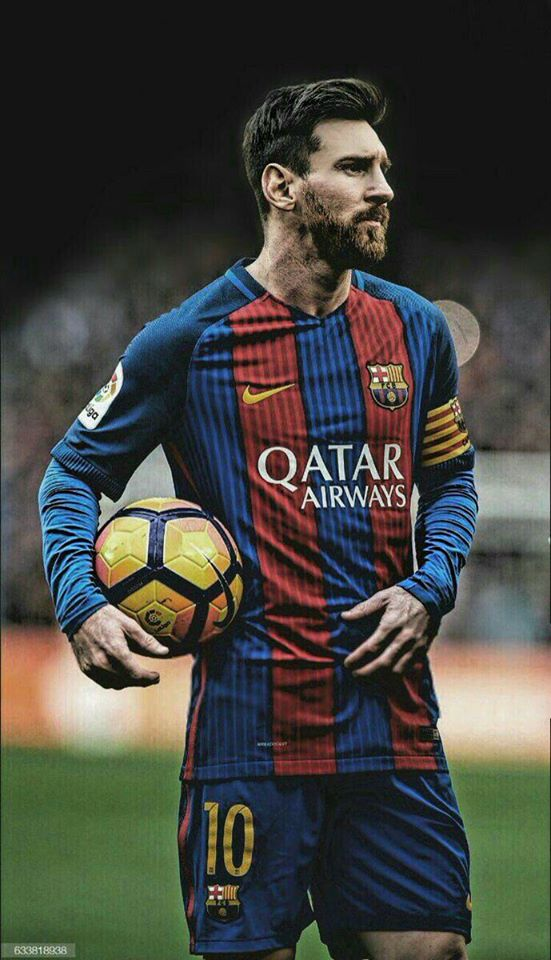
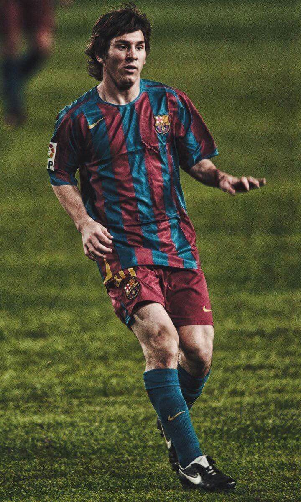

Esta es la vida de Lionel Messi
 Lionel Andrés Messi Cuccittini, conocido cómo Lionel Messi o simplemente «Lio», es un futbolista argentino que nació en Rosario, provincia de Santa Fe, el 24 de junio de 1987 y actúa como delantero o extremo derecho. Viene de familia de escasos recursos económicos, conformada por su padre Jorge Horacio Messi trabajador de una fábrica y su madre Celia María Cuccittini trabajadora de oficios varios. Su abuela materna Celia Olivera, fue quien lo impulsó y motivó a tomar el fútbol como carrera profesional, por eso en el año 1992 cuando tenía 5 años empezó su formación como futbolista en el club. Abanderado Grandoli, que era uno de los equipos formativos de Rosario. En el año 1994, Lionel Messi arrancó su paso por las divisiones inferiores por Newell’s Old Boys donde empezó a dar muestra de su habilidad con el balón y a obtener varios títulos nacionales. A la edad de 11 años, el jugador recibió una noticia no muy grata, ya que se le diagnosticó deficiencia en la hormona de crecimiento, lo que lo empezaba a hacer poco atractivo a los clubes importantes de fútbol a pesar del gran talento que tenía, sin embargo, esto no fue impedimento para que Messi continuara con sus aspiraciones de ser futbolista profesional.
 A parte de sus características futbolísticas, Lionel Messi ha sido reconocido por la voluntad de ayudar a las personas que lo necesitan, por esto en el año 2007 creó la fundación Leo Messi, cuya función es ayudar a niños y adolescentes con problemas educativos y de salud. Por medio de esta fundación también se han construido parques, polideportivos y zonas sociales. El jugador también colabora en actos benéficos de manera independiente participando en partidos de exhibición y realizando campañas para recolectar fondos. Este tipo de ayudas sociales hicieron que el 11 de marzo de 2010 fuera nombrado por Unicef como embajador de buena voluntad.
 Desde el año 2008 hasta la fecha, el jugador sostiene una relacion sentimental con Antonella Roccuzzo, con la cual tiene dos hijos: Thiago y Mateo. En el año 2013, los movimientos financieros de Messi fueron investigados y se encontró que había movimientos ilegales para evadir impuestos relacionados por ganancias de patrocinios y publicidad en el periodo entre 2007 y 2009. Por esto, el jugador y su padre fueron declarados culpables por fraude fiscal y sentenciados a una pena de 21 meses de prisión con una multa de más de 3 millones de euros. Sin embargo, tras llegar a un acuerdo se le concedió solo el pago de la multa y no pagar la sentencia en prisión.